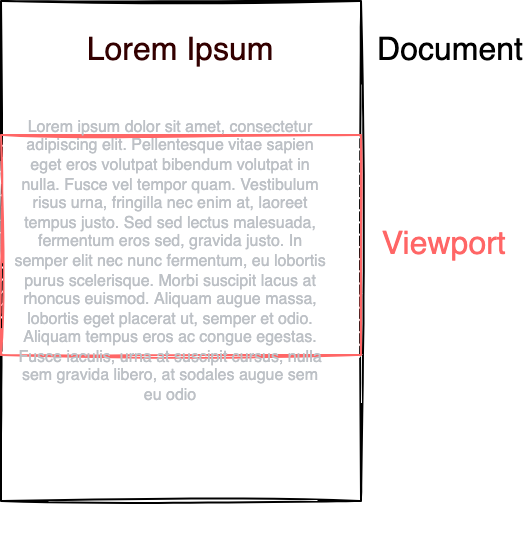
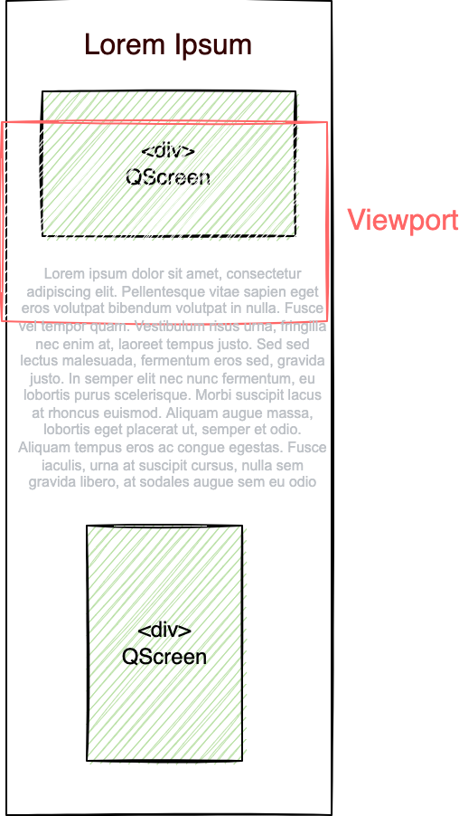
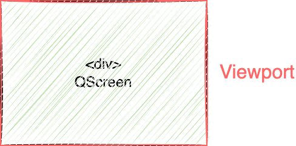
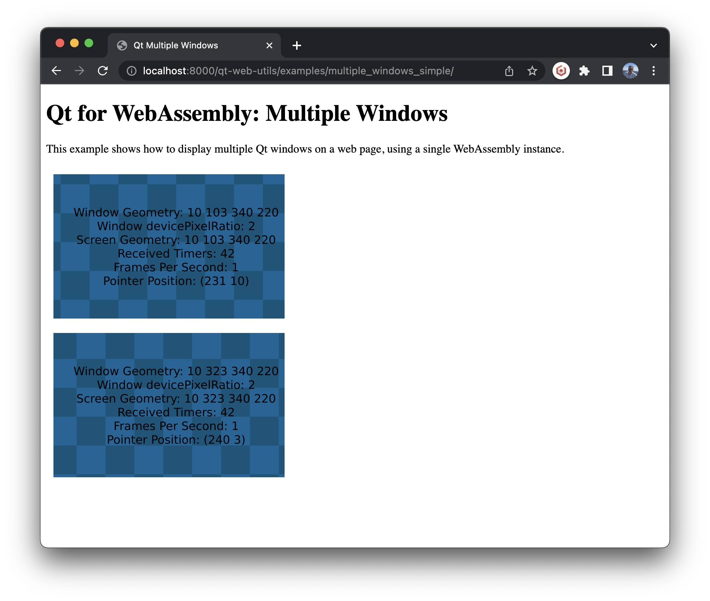
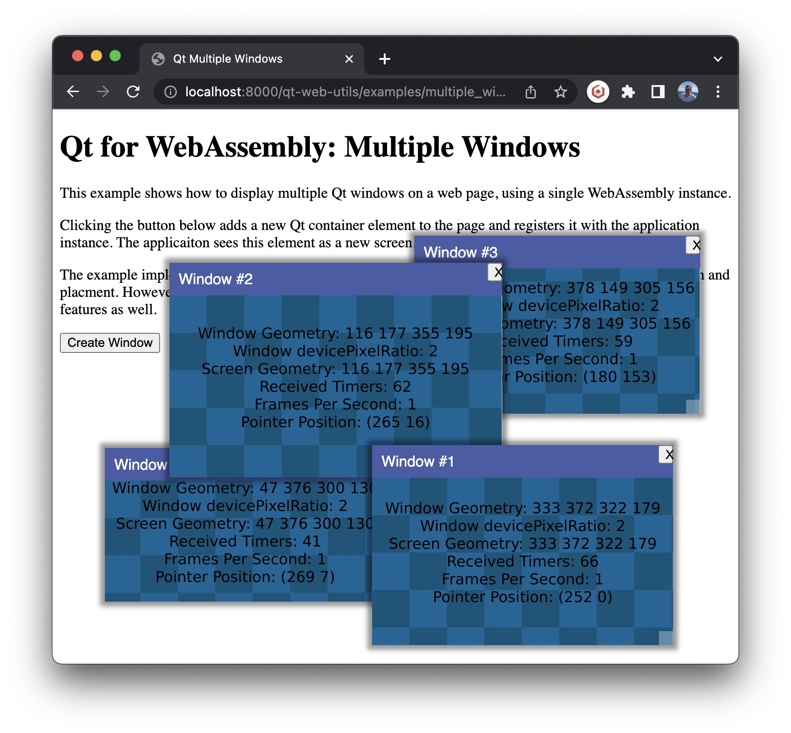
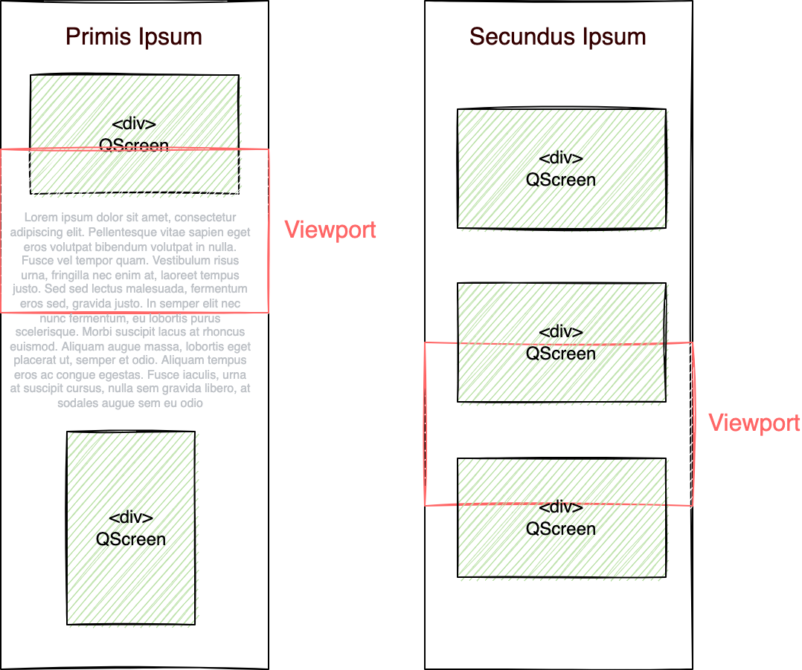
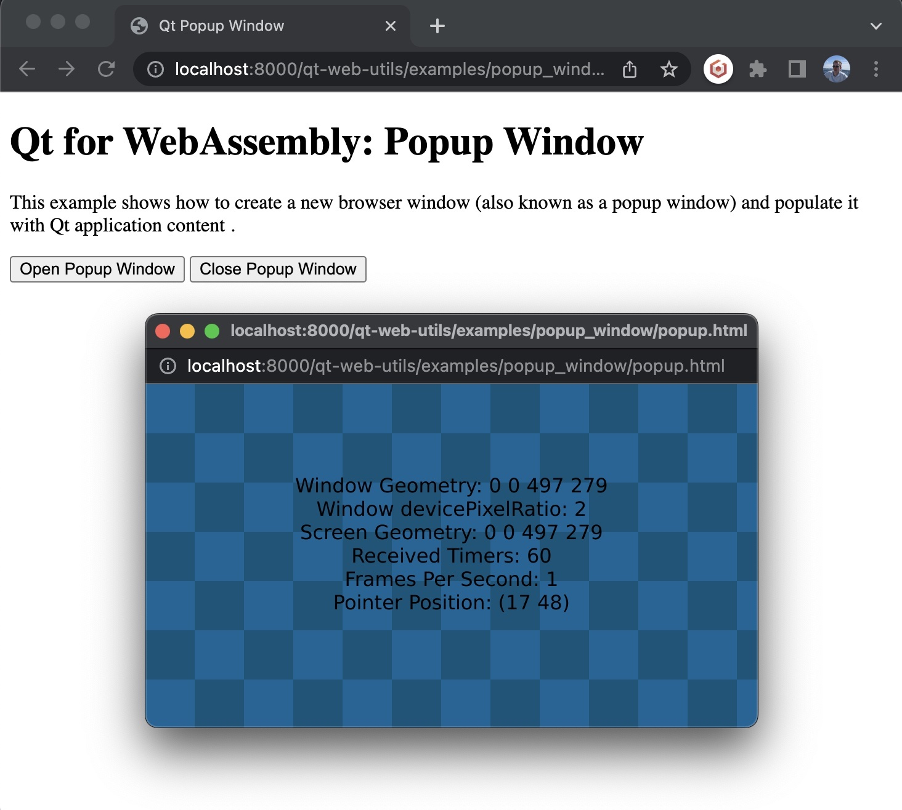

In my previous blog we took a look at how to bring the Slate app to the web, with some pratical pointers on how use web features such as file dialogs and navigate-away warning dialogs.
In this blog we'll take a closer look at how integrate Qt and the web, spesifically at how to embed application windows in web documents. By default, Qt genereates an html file which supports one application window that use entire browser viewport. However this is not the only option. Applications can also provide custom html which supports mixing Qt and web content. To understand how this works we'll take a look at the html document structure, and how Qt interacts with html documents
Html documents have a size (with and height), and define a coordinate system for placing html elements. This placement is often done automatically by the html layout engine, though placing elements at explicit coordinates using absolute geometry is also possible. The browser displays the document through the viewport - scrolling the web page moves the viewport over the document. 
A key differeence between Qt for WebAssembly and Qt on ther platforms is that QScreen does not map to a physical screen. Instead, it maps to a html container element somewhere on the html document. It retains key "screen" properties where QScreen is a container for application windows, with externally specified geometry.
Window management within the QScreen is similar to other platforms. Windows in Qt::WindowFullScreen mode use the enitre QScreen area and do not have window decorations, while windows in normal mode do have window decorations and can be moved and resized by the user.
The integration point between QScreen and the html document is a div container element. QScreen will take the geometry of the div container element, and Qt will populate it with child elements depending on window configuraiton. One of the child elements will typically be a canvas element, other elemens include visually hidden accessibility elements and window management elements. Earlier versions of Qt used a canvas element as the integration point, however this is now deprecated and applications should use div elements instead. 
The above describes the general case with multiple Qt container with mixed html and Qt application content. Often, we'd like the applicaiton to use the full size of the browser window. This is done by configuring the web document and Qt container to use the entire viewport area. 
The default html generated by Qt uses this configuration. Window management is simple in this case; the app calls show() on the window which makes the it use the entire QScreen and html viewport area.
The Qt Web utils repository contains several examples which shows how to customize html document integration. We'll take a look at some code examples here where we look at how to write html and JavaScript which configures Qt to use one or more container elements.
The following section uses application and html code from the multiple_windows_simple example, which looks like this in the browser: 
The page contains two html container elements, which are given a size and then laid out using the browser's html layout engine:
<body> <div class="container" style="width:320px; height:200px"></div> <div class="container" style="width:320px; height:200px"></div> </body>
The container elements are looked up at page load time and passsed to QtLoader:
window.addEventListener('load', () => { const containers = document.querySelectorAll("div.container") const qtloader = QtLoader { containerElements : Array.from(containers), showLoader: () => {}, // disable loading notification (optional) } qtloader.load("myapp"); });
Finally, application C++ code must assign windows to screens by iterating over over QGuiApplicaiton::screens():
foreach(QScreen *screen: qApp->screens()) { QWindow *appWindow = new QAppWindow(); appWindow->setScreen(screen); appWindow->show(); }
QWindow::show() behaves like showMaximized() on Qt for WebAssembly, similar to Qt for iOS and Android.
QtLoader supports adding and removing container elements and screens at runtime:
let qtloader = ...; fn addContainer(containerId) { const element = document.getElementById(containerId); qtloader.addContainerElement(element); } fn RemoveContainer(containerId) { const element = document.getElementById(containerId"); qtloader.removeContainerElement(element); }
The applicationthen connects to the QGuiApplicaiton::screenAdded() and QGuiApplicaiton::screenRemoved() where it adds or removes windows.
QHash<QScreen *, QWindow *> g_windows; // one window per sceen connect(qApp, &QGuiApplication::screenAdded, [](QScreen *screen){ QWindow *window = new AppWindow(); window->setScreen(screen); window->show(); g_windows.insert(screen, window); }); connect(qApp, &QGuiApplication::screenRemoved, [](QScreen *screen){ QWindow *window = g_windows.take(screen); window->hide() delete window; });
The multiple_windows example demonstrates adding and remove windows at runtime using a simple window manager: 
Web applicaitons are capable of opening additional browser windows or tabs, with some limitations in order to prevent pages from creating too many annoying popups. Creating an additional browser window creates an additional document as well, with its own viewport. 
The second window can then access the qtloader object from the first window, by making use of the window.opener() API:
window.onload = () => { const container = document.getElementById("container"); window.opener.qtloader.addContainerElement(container); }
Qt Web Utils provides the openBrowserWindow() utility function for opening a new window or tab. Behind the scenes, this function uses emscripten::val to call the native window.open() API:
emscripten::val openBrowserWindow(const QString& source, const QString &name, QSize size) { QString features = QString("height=%2, width=%1 ").arg(size.width()).arg(size.height()); emscripten::val window = emscripten::val::global("window"); emscripten::val popup = window.call<emscripten::val>( "open", source.toStdString(), name.toStdString(), features.toStdString()); return popupWindow; }
Placing windows on secondary html documents requires Qt 6.5 or higher, where we have refactored the implementation to make use of the specialHTMLTargets functionality from Emscritpen in order to work around its limitation of supporting one html document only.
The popup_window example demonstrates how this works in practice: 
With this is should be possible to create both simple and complex html document integrations. Is there something we have missed or which is uclear? Let me know in the comments.